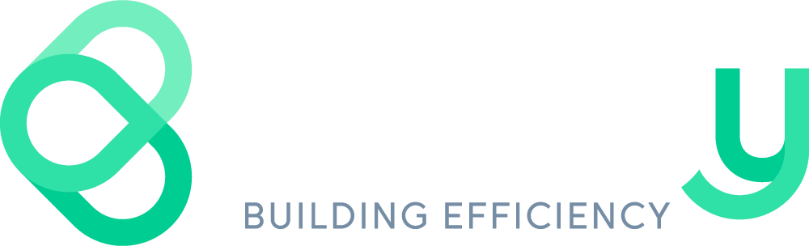

Méthode d'audit · Décret BACS R175

Audit BACS — la checklist en 1 page
Les questions à se poser avant d'engager un audit BACS et les critères pour repérer un audit sérieux d'un audit complaisant. Extrait condensé du livre blanc Buildy.
1 Suis-je concerné par le décret ?
- Puissance CVC > 290 kW — assujetti depuis le 1ᵉʳ janvier 2025. en retard si non engagé
- Puissance CVC entre 70 et 290 kW — échéance au 1ᵉʳ janvier 2027. à planifier
- Puissance CVC < 70 kW — bâtiment non assujetti. hors décret
2 Six critères pour juger une offre d'audit
- La proposition ou l'auditeur me parle-t-il d'une classe ISO 52120-1 (ex : classe C) comme minimum obligatoire ? Si oui, mauvais signe Le décret BACS n'impose aucune classe de performance.
- L'auditeur prévoit-il de calculer le TRI d'exemption à ma place ? Mauvais signe Ce calcul relève de la responsabilité du propriétaire (R175-2 et R175-6).
- L'auditeur prévoit-il de travailler à distance, sans visite physique complète et sans relevé sur place ? Si oui, mauvais signe Sans relevé sur site, l'audit se résume au déclaratif de l'exploitant et passe à côté des écarts entre plans et réalité.
- L'audit prévoit-il un inventaire équipement par équipement, et non un échantillon ? Bon signe Un audit sur échantillon laisse des zones d'ombre invisibles dans le rapport final.
- Le rapport justifie-t-il chaque préconisation au regard des exigences précises du décret R175 ? Bon signe Sans cette traçabilité exigence ↔ action, le rapport n'est pas défendable face à un contrôle.
- Le plan de mise en conformité est-il directement exploitable par un intégrateur GTB ? Bon signe Une consultation cohérente et comparable, action par action.
3 Ce qu'un audit BACS sérieux livre
- Inventaire complet des zones fonctionnelles, systèmes techniques et équipements, qualifiés sur l'interopérabilité, l'arrêt manuel et le fonctionnement autonome.
- Plan d'action hiérarchisé par sévérité (bloquant / majeur / mineur), traçable jusqu'à l'observation source de chaque action.
- Tableau de bord visuel qui note, pour chaque exigence du décret (suivi continu, interopérabilité, régulation thermique, formation de l'exploitant…), un verdict conforme / partiel / non conforme — votre statut R175 en un coup d'œil.
- Plan détaillé de mise en conformité pour une consultation simplifiée et cohérente des intégrateurs GTB, dont Buildy.
- Quatre annexes recommandées — texte du décret, méthodologie, justification des préconisations, mentions légales — et conservation 10 ans du rapport.
Références
Ils nous font confiance
Des propriétaires, gestionnaires de parc et acteurs de l'immobilier tertiaire travaillent déjà avec Buildy — pour leurs audits BACS comme pour le déploiement et l'exploitation de notre solution de supervision.
Vous préférez nous laisser faire ?
Buildy réalise vos audits BACS.
Notre méthode s'applique à tous types de bâtiments tertiaires assujettis au décret R175 — commerces, plateaux de bureaux, sièges sociaux, cellules logistiques, établissements d'enseignement. Éditeur, intégrateur et mainteneur de notre propre solution de supervision, nous connaissons le décret BACS des deux côtés : l'audit et la mise en conformité.
Le rapport livré suit la méthode détaillée dans notre livre blanc, jusqu'aux quatre annexes recommandées (texte du décret, méthodologie, justifications, mentions légales).
1
ÉchangeOn cadre votre besoin et votre bâtiment en quelques minutes.
2
Deux visitesRelevé exhaustif sur site, puis validation.
3
Rapport + planLivrés en quelques semaines.
Tarif forfaitaire
à partir de 2 500 € HT
par bâtiment, frais de déplacement inclus. Devis dédié selon la taille et la complexité du bâtiment.